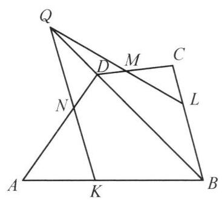

23 例 6：四边形外接圆与交点线共点证明
23.1 题目
设点 P 是凸四边形 {ABCD} 所在平面上一点， \angle {APB} ， \angle {BPC} ， \angle {CPD} ， \angle {DPA} 的平分线分别交 {AB} ， {BC} ， {CD} ， {DA} 于点 K ， L ， M ， N .
23.2 参考解答
(1)寻找一点 P ，使得 {KLMN}L 是平行四边形；
(2)求所有这样的点 P 的轨迹.

图 3-5
解(1)设点 P 是 {AC} 与 {BD} 的垂直平分线的交点，则 {PA} = {PC} ， {PB} = {PD} ，因为 {PK} 平分 \angle {APB} ， {PL} 平分 \angle {BPC} ,所以
\frac{AK}{KB} = \frac{PA}{PB} = \frac{PC}{PB} = \frac{CL}{LB},
故 {KL}//{AC} .
同理, {MN}//{AC} .
所以 {KL}//{MN} .
同理可得 {LM}//{NK} ,所以 {KLMN} 是平行四边形.
(2)如图 3-5，设 {KLMN} 是平行四边形，则
\frac{AK}{KB} \cdot \frac{BL}{LC} \cdot \frac{CM}{MD} \cdot \frac{DN}{NA}
= \frac{PA}{PB} \cdot \frac{PB}{PC} \cdot \frac{PC}{PD} \cdot \frac{PD}{PA}
①
= 1\text{ . }
假设 {KN} 与 {BD} 交于点 Q ,对 \triangle {ABD} 及直线 {KNQ} ,用梅涅劳斯定理,有
\frac{DN}{NA} \cdot \frac{AK}{KB} \cdot \frac{BQ}{QD} = 1,
结合①式得
\frac{BL}{LC} \cdot \frac{CM}{MD} \cdot \frac{DQ}{QB} = 1
在 \triangle {BCD} 中应用梅涅劳斯定理的逆定理得, Q, M, L 三点共线, {KN} 与 {LM} 交于点 Q ,这不可能. 故 {KN}//{BD}//{LM} ,因此
\frac{PA}{PB} = \frac{AK}{KB} = \frac{AN}{ND} = \frac{PA}{PD},
于是有 {PB} = {PD} .
同理有 {PA} = {PC} .
所以 P 点的轨迹是 {AC} 与 {BD} 的垂直平分线的交点这一个点.
注: 反证法在几何证明中并不多见. 本题利用反证法证明 {NK}//{BD}//{ML} ,关系式 \frac{AK}{KB} \cdot \frac{BL}{LC} \cdot \frac{CM}{MD} \cdot \frac{DN}{NA} = 1 是关键.
23.3 解题思路与分析
这个证明之所以让人感到“费解”、像是在变魔术，是因为教材的书写顺序掩盖了逆向探索的直觉，并且为了迁就初等欧氏几何的语言（回避“无穷远点”），把一个非常自然的三线共点性质包装成了略显生硬的“反证法”。
如果把作者在草稿纸上的真实思考过程还原出来，其实经历了以下三个非常自然的阶段：
23.3.1 第一步：由第 (1) 问引发的“目标倒推”
在第 (1) 问中，为了构造平行四边形 KLMN，作者借用了类似瓦里尼翁平行四边形（Varignon’s Theorem，连接四边形各边中点所得图形）的思路：利用原四边形的两条对角线 AC 和 BD 作为“平行中介”，让 KL \parallel AC \parallel MN 且 KN \parallel BD \parallel LM，从而顺理成章地利用比例线段推出 PA = PC 和 PB = PD。
到了第 (2) 问求轨迹时，解题者心里其实已经有了强烈的预感：满足条件的点 P 很可能只有这一个！ 要想证明点 P 唯一，就必须反过来证明：只要 KLMN 是平行四边形，它的两组对边就别无选择，必须分别平行于对角线 AC 和 BD。
因此，第 (2) 问从一开始的攻坚目标就极其明确：已知 KN \parallel LM，如何证明它们一定平行于对角线 BD？
23.3.2 第二步：代数本能与“对角线搭桥”
手头的已知条件是四条角平分线交于点 P。由角平分线定理，四个分点给出了四组线段比： \frac{AK}{KB} = \frac{PA}{PB}, \quad \frac{BL}{LC} = \frac{PB}{PC}, \quad \frac{CM}{MD} = \frac{PC}{PD}, \quad \frac{DN}{NA} = \frac{PD}{PA}
观察等号右边的四个分式，分子分母首尾相接。任何一个熟悉几何代数化的解题者，都会本能地将它们连乘消去（Telescoping），从而无条件地得到关系式 ①： \frac{AK}{KB} \cdot \frac{BL}{LC} \cdot \frac{CM}{MD} \cdot \frac{DN}{NA} = 1
接下来是关键：四边形四条边上的分点比例连乘等于 1，在几何上意味着什么？ * 如果把四边形 ABCD 沿着对角线折起来变成空间四边形，这个式子就是立体几何中著名的“四点 K, L, M, N 共面”的充要条件（空间梅涅劳斯定理）。 * 回到平面上，四边形本身没有直接的梅涅劳斯定理。要想利用这个乘积为 1 的条件，最标准的手法就是连结对角线 BD，把四边形切分成两个共享底边 BD 的三角形 \triangle ABD 和 \triangle BCD。
此时，对角线 BD 就成了连接左上角（K, N）和右下角（L, M）的唯一桥梁： 1. 在 \triangle ABD 中，直线 KN 截三边（假设交对角线 BD 于点 Q），梅涅劳斯定理可以把前两项乘积 \frac{DN}{NA} \cdot \frac{AK}{KB} 转化为对角线上的比例 \frac{QD}{BQ}。 2. 在 \triangle BCD 中，直线 LM 截三边（假设交对角线 BD 于点 Q'），梅涅劳斯定理可以把后两项乘积 \frac{BL}{LC} \cdot \frac{CM}{MD} 转化为对角线上的比例 \frac{Q'B}{DQ'}。 3. 将两者结合关系式 ① 相乘，立刻得到 \frac{QD}{BQ} = \frac{Q'D}{BQ'}，这意味着点 Q 与点 Q' 必定重合！
这就揭示了隐藏在背后的核心几何引理： > 引理： 在四边形 ABCD 中，四边上的点满足 \frac{AK}{KB} \cdot \frac{BL}{LC} \cdot \frac{CM}{MD} \cdot \frac{DN}{NA} = 1 的充要条件是：直线 KN、直线 LM 与对角线 BD 三线共点（或三线平行）。
23.3.3 第三步：看穿“反证法”的伪装（射影几何视角）
理解了上面的引理，就能明白为什么书上的“反证法”看起来那么别扭了。
如果站在射影几何（Projective Geometry）的视角下，平行线本质上就是“相交于无穷远点”的直线。用射影几何的语言来写第 (2) 问，根本不需要反证法，完全是正向推导： 1. 由四条角平分线导出乘积关系式 ①，根据上述引理，直线 KN、LM 与对角线 BD 必定三线共点。 2. 因为 KLMN 是平行四边形，所以 KN \parallel LM，即直线 KN 与 LM 相交于无穷远点 Q_\infty。 3. 既然三线共点，对角线 BD 也必须经过这个无穷远点 Q_\infty，因此直接得出 KN \parallel BD \parallel LM！
为什么教材非要写成反证法？ 因为在中学初等欧氏几何的体系里，没有“无穷远点”的概念，“相交”和“平行”被割裂成了两种对立的情况。如果直接假设 KN \parallel BD，连交点 Q 都不存在，梅涅劳斯定理里的分式 \frac{BQ}{QD} 根本无法动笔写出来。
为了能够合法地写出 \frac{BQ}{QD} 并调用梅涅劳斯定理这件工具，教材作者被迫采用了反证法的外壳：先假装 KN 与 BD 不平行，设它们交于某个有限远处的点 Q（并画出了图 3-5 中那個看似交于点 Q 的假想图），然后用梅涅劳斯定理推导出 LM 也经过点 Q，最后再用已知条件 KN \parallel LM（没有有限远交点）把点 Q 否定掉，从而逼出 KN \parallel BD \parallel LM 的结论。
所以，书末“注”里提到的“利用反证法证明平行”，并不是什么奇思妙想的逻辑技巧，而是将射影几何中“三线交于无穷远点”翻译成初等几何语言时不得不采取的技术性妥协。
23.4 分步证明
23.4.1 步骤 0：0️⃣ 构型与四条角平分线
给定凸四边形 ABCD 及其平面内任意点 P。 连结 PA, PB, PC, PD，分别作 ∠APB, ∠BPC, ∠CPD, ∠DPA 的角平分线，交各边于分点 K, L, M, N。 由三角形角平分线分对边成比例定理，各边分比恒等于点 P 到相邻两顶点的距离之比：
AKKB = PAPB, BLLC = PBPC, CMMD = PCPD, DNNA = PDPA
内接四边形 KLMN 何时能成为平行四边形？这取决于点 P 的空间位置约束。
23.4.2 步骤 1：1️⃣ 充分性构造：取中垂线交点 P
- 寻找满足条件的特殊点 P： 作四边形对角线 AC 与 BD 的垂直平分线（紫色虚线），设它们的交点为 P。 由垂直平分线的性质，点 P 到对角线两端点的距离严格相等：
PA = PC 且 PB = PD
代入 Step 0 的角平分线比例式中：
AKKB = PAPB = PCPB = CLLB
对应边分线段之比完全一致！
23.4.3 步骤 2：2️⃣ 充分性验证：KLMN 必为平行四边形
在 △ABC 中，由 AKKB = CLLB ⟺ BKKA = BLLC，根据平行线分线段成比例定理之逆定理：
KL ∥ AC
同理在 △ADC 中，由 MDCM = PDPC = PBPA = NDAN，得 MN ∥ AC。 因此两组边均平行于对角线 AC：
KL ∥ MN
完全同理可推得 LM ∥ BD ∥ NK。 两组对边分别平行，故 KLMN 必为平行四边形！充分性获证。
23.4.4 步骤 3：3️⃣ 必要性反证：梅氏定理导出平行
- 探求点 P 的全部轨迹（必要性证明）： 反之，设 KLMN 是平行四边形。将四个角平分线比例式依次连乘，各项首尾相消：
AKKB · BLLC · CMMD · DNNA = PAPB · PBPC · PCPD · PDPA = 1 ①
用反证法证明 KN ∥ BD： 假设 KN 与 BD 不平行，延长必交于点 Q。对 △ABD 及截线 KNQ，应用梅涅劳斯定理：
DNNA · AKKB · BQQD = 1
结合 ① 式相比消去对应项，立得：BLLC · CMMD · DQQB = 1。
23.4.5 步骤 4：4️⃣ 导出 PA=PC 且 PB=PD
在 △BCD 中应用梅涅劳斯定理的逆定理： 点 Q, M, L 必须三点共线！ 这意味着直线 KN 与直线 LM 将在点 Q 处相交。 但这与已知条件“KLMN 是平行四边形”（KN ∥ LM，永不相交）产生致命矛盾！ 故反证假设不成立，必有：
KN ∥ BD ∥ LM 且 KL ∥ AC ∥ MN
由 KN ∥ BD 得 PAPB = AKKB = ANND = PAPD ⟹ PB = PD！ 同理由 KL ∥ AC 得 PA = PC！
23.4.6 步骤 5：5️⃣ 最终结论：点 P 的唯一轨迹
综上所述，充要条件完全闭环： 1. 充分性：若 P 为 AC 与 BD 的垂直平分线交点，则 PA=PC, PB=PD，直接导出 KLMN 为平行四边形； 2. 必要性：若 KLMN 为平行四边形，则必有 PA=PC 且 PB=PD，故点 P 必须同时落在对角线 AC 和 BD 的垂直平分线上。 对于任意一般凸四边形，两对角线 AC 与 BD 既不重合也不平行，其垂直平分线相交于唯一确定的交点。
核心结论：满足条件的点 P 的轨迹是 AC 与 BD 的垂直平分线的交点（唯一的一个点）。